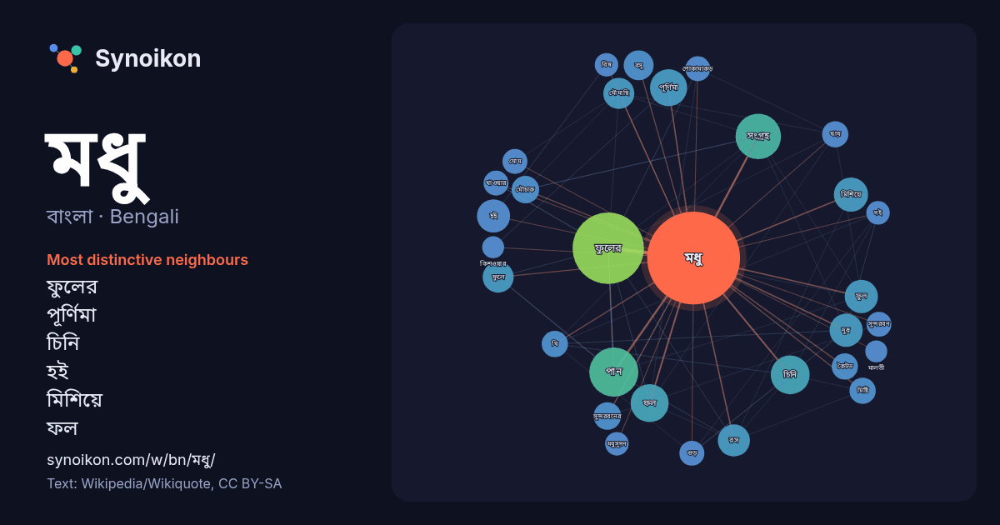

বাংলা · Bengali · word of the day list
মধু
“honey” · The words found around it in 793 instances from Bengali Wikipedia, Wikiquote.

Most distinctive neighbours
- ফুলের 57×
- পূর্ণিমা 20×
- চিনি 20×
- হই 17×
- মিশিয়ে 16×
- ফল 15×
- মৌমাছি 14×
- দুধ 14×
- ফুলে 14×
- সংগ্রহ 13×
- রস 13×
- মৌচাক 12×
- ফুল 12×
- সুন্দরবনের 11×
- বসু 11×
- কৈটভ 11×
- ঘি 10×
- খায় 9.7×
- গুড় 9.6×
- মোম 9.6×
× = how many times more often than in general Bengali Wikipedia text.
Most frequent neighbours
- ফুলের 74
- পান 35
- সংগ্রহ 30
- চিনি 22
- ফল 21
- পূর্ণিমা 20
- মিশিয়ে 17
- ছোট 16
- দুধ 16
- ফুল 16
- হই 16
- একজন 15
- চরিত্রে 15
- নাম 15
- নামে 15
- রস 15
- ফুলে 14
- মৌমাছি 14
- বসু 13
- তৈরি 12
In context
- মধু হলো এক প্রকারের মিষ্টি ও ঘন তরল পদার্থ, যা মৌমাছি ও অন্যান্য পতঙ্গ ফুলের নির্যাস হতে তৈরি করে এবং মৌচাকে সংরক্ষণ করে। এটি উচ্চ ঔষধিগুণ সম্পন্ন একটি Wikipedia snippets · মধু
- মধু (সংস্কৃত: मधु) ও কৈটভ (সংস্কৃত: कैटभ) হিন্দু ধর্মগ্রন্থের দুইজন অসুর এবং তারা হিন্দুধর্মীয় বিশ্বতত্ত্বের সাথে যুক্ত। তারা উভয়ই ভগবান বিষ্ণুর কানে Wikipedia snippets · মধু ও কৈটভ
- মধু হই হই চাটগাঁইয়া ভাষার একটি গান যা সারা বাংলাদেশে জনপ্রিয়তা পায় খুদে শিল্পী জাহিদের কণ্ঠে। ২০১৬ সালে সংগীতশিল্পী ইমরান হোসেনের মাধ্যমে ‘মধু হই হই Wikipedia snippets · মধু হই হই
- মধু পূর্ণিমা বৌদ্ধদের অন্যতম একটি ধর্মীয় উৎসব। এ দিনটি বৌদ্ধ ইতিহাসে একটি ঐতিহাসিক ও তাৎপর্যময় দিন। ভাদ্র মাসের পূর্ণিমা তিথিতে এ উৎসব পালন করা হয়। Wikipedia snippets · মধু পূর্ণিমা
- মধু (জন্মঃ ১৯৬৯) হচ্ছেন ভারতের একজন চলচ্চিত্র অভিনেত্রী। তিনি হিন্দি, তামিল, তেলুগু, কন্নড় এবং মালয়ালম ভাষার চলচ্চিত্রে কাজ করেছেন। তার অভিনীত গুরুত্বপূর্ণ Wikipedia snippets · মধু (অভিনেত্রী)
- মধু সপ্রে (মারাঠি: मधू सप्रे: জন্মঃ ১৯৭১) ভারতের একজন প্রাক্তন মডেল এবং অভিনেত্রী। ১৯৯২ সালে অনুষ্ঠিত ফেমিনা মিস ইন্ডিয়া এবং মিস ইউনিভার্স সুন্দরী প্রতিযোগিতায … Wikipedia snippets · মধু সপ্রে
- মধু বসু (১২ ফেব্রুয়ারি, ১৯০০—২৫ সেপ্টেম্বর, ১৯৬৯) একজন বিখ্যাত বাঙালি চিত্রপরিচালক, অভিনেতা এবং নাট্যব্যক্তিত্ব। মধু বসুর আসল নাম ছিল সুকুমার বসু। তাঁর Wikipedia snippets · মধু বসু
- সুন্দরবন মধু সুন্দরবন থেকে প্রাপ্ত এক প্রকার মধু, যা বাংলাদেশের খুলনা, সাতক্ষীরা ও বাগেরহাট জেলা এবং ভারতীয় রাজ্য পশ্চিমবঙ্গের দক্ষিণ চব্বিশ পরগনা ও Wikipedia snippets · সুন্দরবন মধু
More Bengali words
- অরণ্য
- আয়না
- ইতিহাস
- ঈশ্বর
- কাজ
- কুকুর
- ক্ষমতা
- খাদ্য
- গান
- গ্রীষ্ম
- ঘড়ি
- ঘণ্টা
- ঘোড়া
- ছায়া
- জননী
- জলবায়ু
- জীবন
- ঝড়
- টাকা
- ট্রেন
- দারুচিনি
- দ্বীপ
- নক্ষত্র
- নীরবতা
- পরিবার
- পানি
- পাহাড়
- প্রকৃতি
- বাগান
- বিজ্ঞান
- বিড়াল
- বৃষ্টি
- ভাষা
- মরুভূমি
- মানচিত্র
- মৃত্যু
- রাস্তা
- রুটি
- লবণ
- শরৎ
- শহর
- শিল্প
- শীত
- সত্য
- সময়
- সেতু
- সোনা
- স্বাস্থ্য
- হৃদয়
Precomputed on 2026-10-09 with default settings (±5 words, medium corpus). The interactive map can refresh it with live data.